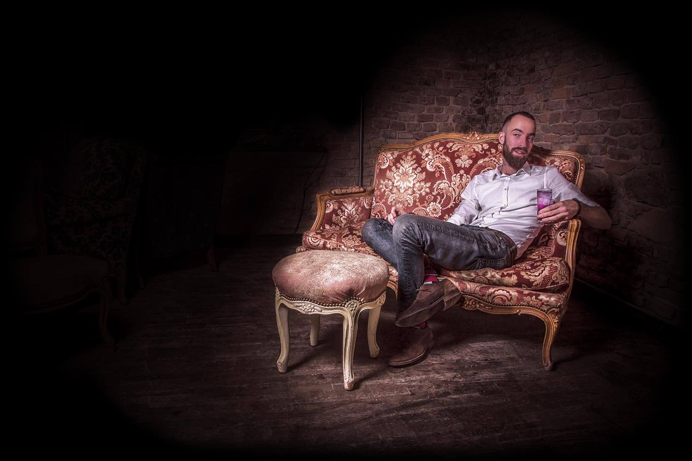

koktejl
Každý má svou SLAST – nikomu neříkáme, co má být ta jeho.
Děláme je už nějaký pátek a umíme je na 1000 způsobů. Teď ale přidáváme 1000+1! Slastný trademark se jmenuje „low alko a nealko” aneb “aby sis to mohl užít, nemusíš být namol”. Nechceme Vás opít. Chceme, aby Vás zaplavily chutě, které jste ještě nepoznali – a které jdou krásně dohromady (třeba) s našimi dýmkami.
